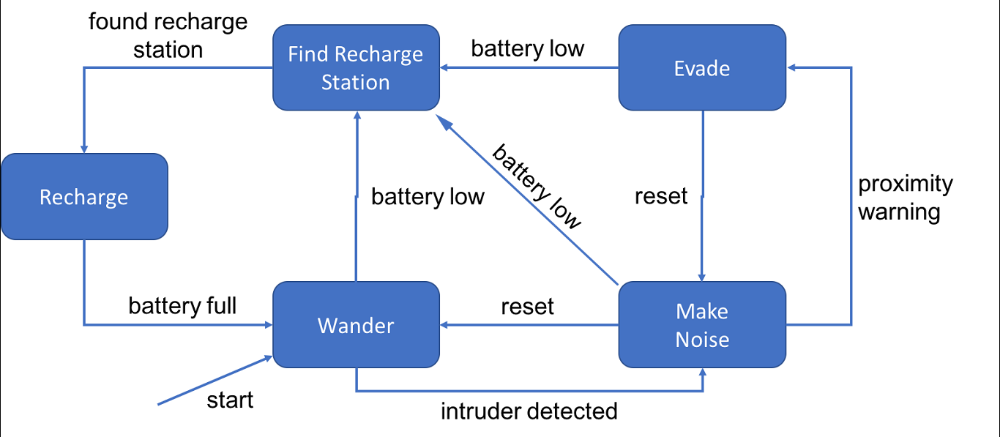

A robot finite state machine built from the elma libraries found here. The goal of the project is to create a simulation of the robot in a 2D environment and to output a visualization of the robot's state over time.
Project Plan
This list of milestones in the project:
- [x] Get the robot finate state machine running in order to pass the grading file (due: March 17th—completed: March 17th)
- [x] Update the README.md file to include installation instructions (due: March 17th—completed: March 17th)
- [x] Add a coordinate system to the robot structure (due: March 20th—completed: March 18th)
- [x] Research what visualization tools exist for c++ (due: March 17th—completed: March 15th)
- [x] Impliment UI tool into the program (due: March 20th—completed: March 17th)
- [x] Impliment visualization of coordinate system into the program (due: March 20th—completed: March 19th )
- [x] Add API documentation (due: March 20nd—completed: March 19th )
- [x] Add simulations of the battery state (due: March 22nd—completed: March 19th )
- [ ] Update unit tests for all methods (due: March 19th—completed: ??? )
- [ ] Add coordinates for recharge station (due: March 19th—completed: ??? )
- [ ] Add details to evadeMoveFunction (due: March 19th—completed: ??? )
- [ ] Add details to findRechargeMoveFunction (due: March 19th—completed: ??? )
- [ ] Add details to makeNoiseFunction (due: March 19th—completed: ??? )
- [ ] Add details to rechargeFunction (due: March 19th—completed: ??? )
- [ ] Add simulations of the intruder state (due: March 22nd—completed: ??? )
- [ ] Finalize API documentation (due: March 22nd—completed: ??? )
- [ ] Create a docs page in GitHub (due: March 22nd—completed: ??? )
- [ ] Submit the final version to GitHub (due: March 22nd—completed: ??? )
Installation
In order to build and run the SecurityBot program you will need the following:
I) An installation of Git
(Which you probably already have if you are reading this.)
Mac
- Install the Xcode Command Line Tools.
Windows
- Go to https://git-scm.com/download/win
II) An installation of Docker
Mac
- Go to https://www.docker.com/
- Download
Docker.dmg and double click on it. Once the Docker icon shows up in your status bar, you can open a terminal and start using docker. Windows 10 Professional or Enterprise
- Go to https://www.docker.com/
- Download and run installer
Windows 10 Home and possibly Windows 8
- Go to https://docs.docker.com/toolbox/toolbox_install_windows/
- Download and run installer
- Run Docker Quickstart
III) An integrated development environment "IDE": I've used Visual Studio Code
- Go to https://code.visualstudio.com/
- Download and run installer
IV) A copy of the SecurityBot software
Use git to clone SecurityBot into a local folder. Open "git bash" program in the folder you wish to download the software and run the following command: ```bash git clone https://github.com/klavins/ECEP520.git ```
V) A C++ Build Environment From Dockerhub
Next you will need a C++ build environment in order to compile the newly downloaded software. I recommend a build environment that has all the necessary elma libraries already built into it. This environment, called a Docker container, has all the necessary OS setup and libraries for the SecurityBot program to compile correctly. The Docker container I recommend is called "elma". In order to use this container you need to open a shell terminal, navigate to the directory in which you downloaded the SecurityBot source code, and type the following: ```bash docker run -v $PWD:/source -it klavins/elma:latest bash ``` Note: $PWD may not work on all Windows OS so replace with full path for example: ```bash docker run -v /c/workingDIRECTORY/SecurityBot:/source -it klavins/elma:latest bash ```
Manual Installation
It is not recommended to install Elma without using Docker. If you desire to do so anyway, you can view instructions here
Detailed System Description
SecurityBot is a statemachine that models the following diagram:

License
This software is open source and uses the MIT license. Details can be found here.
 1.8.8
1.8.8